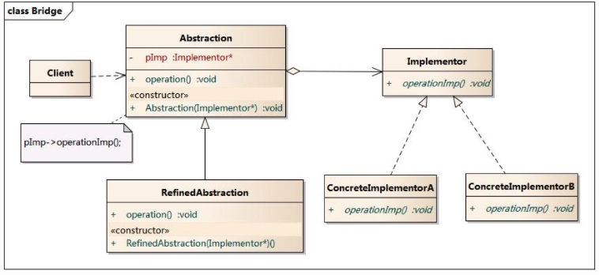

桥接模式
先抛出问题：设计一个跨平台视频播放器框架，可以在Windows、Linux、Unix平台上播放rmvb、avi、mpeg、wmv格式的视频文件。
- 方案一：每个平台都提供一套解码和视频操作接口；
- 方案二：平台视频操作接口和解码独立出来，根据实际的视频格式先解码，然后再在不同的平台上对解码后的视频数据进行操作。
方案一
// WindowsPlatform
// 开始播放视频
- (void)startWithVideoPath:(NSString *)videoPath {
// 先解码
[self decoding:videoPath];
// 执行特定平台的播放操作
}
// 停止
- (void)stop {
// 执行特定平台的停止操作
}
- (void)decoding:(NSString *)videoPath {
// 根据videoPath文件的后缀名，判断所属的视频格式，然后调用对应的解码方法
}
// RMVB解码
- (void)decodingRMVB:(NSString *)videoPath {
}
// MPEG解码
- (void)decodingMPEG:(NSString *)videoPath {
}
// AVI解码
- (void)decodingAVI:(NSString *)videoPath {
}
// WMV解码
- (void)decodingWMV:(NSString *)videoPath {
}
Linux、Unix和上面代码类似，那么这里会出现什么问题？假如现在需要支持MP4格式，是不是每个平台类中都得添加MP4解码的方法？那以后又要支持音频格式的播放呢？随着业务的增加，平台类中的代码将会越来越臃肿。
方案二
把平台的视频操作和解码独立出来，Platform只负责视频操作，解码由Decoding处理：
// Platform
// aVideoCommandType是对视频进行操作的枚举，比如开始、暂停、重播等；
// aVideoData是已经解码后的视频数据
- (void)executeCommand:(VideoCommandType)aVideoCommandType
videoData:(id)aVideoData {
}
// Decoding
// originData是视频的绝对路径
- (id)decodingWithOrigin:(id)originData {
}
现在我想在Windows平台播放rmvb格式的视频：
// WindowsPlatform 继承 Platform，重写父类方法
- (void)executeCommand:(VideoCommandType)aVideoCommandType videoData:(id)aVideoData {
// 在Windows的平台上对解码后的aVideoData数据进行aVideoCommandType操作
}
// RMVBDecoding 继承 Decoding，重写父类方法
- (id)decodingWithOrigin:(id)originData {
// 解码RMVB视频文件
}
这样的好处，即便添加新的格式支持，只需要继承Decoding，然后重写父类方法进行特定的格式解码。对于添加新的平台来说，同样如此。
上面我们把视频播放器实现的部分完成了，下一步要做的就是怎样给client提供接口。对于Client来说，他们只需要传入视频路径，然后简单的执行start（开始播放）、stop（停止播放）等操作。
我们可以把这些命令抽象出来：
// VideoPlayer
/** Platform */
@property (strong, nonatomic) Platform *platform;
/** Decoding */
@property (strong, nonatomic) Decoding *decoding;
// 对视频文件aVideoOriginData执行aVideoCommandType指令，
- (void)executeCommand:(VideoCommandType)aVideoCommandType videoOriginData:(id)aVideoOriginData {
id decodingData = nil;
// 播放操作，先解码
if (aVideoCommandType == VideoCommandTypePlay) {
decodingData = [self.decoding decodingWithOrigin:aVideoOriginData];
}
// 再平台上执行命令
[self.platform executeCommand:aVideoCommandType videoData:decodingData];
}
我们把Client所有的指令操作抽象成一个类VideoPlayer，在这个类中调用了Platform和Decoding的接口。
最后在创建一个继承VideoPlayer抽象类的JCVideoPlayer，这个类提供了直接的操作接口给Client：
// JCVideoPlayer
- (instancetype)init {
self = [super init];
if (self) {
#ifdef WINDOWS
self.platform = [[WindowsPlatform alloc] init];
#elif defined LINUX
self.platform = [[LinuxPlatform alloc] init];
#elif defined UNIX
self.platform = [[UnixPlatform alloc] init];
#else
self.platform = [[UnixPlatform alloc] init];
#endif
}
return self;
}
// 播放视频
- (void)playVideo:(NSString *)videoPath {
NSString *classString = [self vidoType:videoPath];
Class class = objc_getClass([classString UTF8String]);
self.decoding = [[class alloc] init];
if (!self.decoding) {
NSLog(@"不支持该格式的解码");
return;
}
[super executeCommand:VideoCommandTypePlay videoOriginData:videoPath];
}
// 停止
- (void)stopVideo {
if (!self.decoding) return;
[super executeCommand:VideoCommandTypeStop videoOriginData:nil];
}
// 继续播放
- (void)resumeVideo {
if (!self.decoding) return;
[super executeCommand:VideoCommandTypeResume videoOriginData:nil];
}
// 重新播放
- (void)restartVideo {
if (!self.decoding) return;
[super executeCommand:VideoCommandTypeRestart videoOriginData:nil];
}
#pragma mark - Private Method
- (NSString *)vidoType:(NSString *)videoPath {
NSString *suffix = [[videoPath lastPathComponent] pathExtension];
if ([suffix caseInsensitiveCompare:@"rmvb"] == NSOrderedSame) {
return @"RMVBDecoding";
} else if ([suffix caseInsensitiveCompare:@"mpeg"] == NSOrderedSame) {
return @"MPEGDecoding";
} else if ([suffix caseInsensitiveCompare:@"avi"] == NSOrderedSame) {
return @"AVIDecoding";
} else if ([suffix caseInsensitiveCompare:@"wmv"] == NSOrderedSame) {
return @"WMVDecoding";
} else {
return @"unknow";
}
}
最后Client只需要简单的几行代码：
JCVideoPlayer *videoPlayer = [[JCVideoPlayer alloc] init];
[videoPlayer playVideo:@"~/Library/Developer/xxx.avi"];
Client没有传入Platform、Decoding对象，对于Platform对象只需要定义对应平台的宏，而Decoding是根据视频格式创建Decoding对象，这些都是动态创建的。
桥接模式
最后回归主题，先看看下面的图片（图片来源自：bridge） ：

这就是桥接模式的UML类图，主要有以下部分组成：Abstraction（抽象类）、RefinedAbstraction（扩充抽象类）、Implementor（实现类接口）、ConcreteImplementor（具体实现类）。
方案二中类的对应关系：
Platform -> Implementor（实现类接口）
WindowsPlatform -> ConcreteImplementor（具体实现类）
LinuxPlatform -> ConcreteImplementor（具体实现类）
UnixPlatform - > ConcreteImplementor（具体实现类）
Decoding -> Implementor（实现类接口）
RMVBDecoding -> ConcreteImplementor（具体实现类）
MPEGDecoding -> ConcreteImplementor（具体实现类）
AVIDecoding -> ConcreteImplementor（具体实现类）
WMVDecoding -> ConcreteImplementor（具体实现类）
VideoPlayer -> Abstraction（抽象类）
JCVideoPlayer -> RefinedAbstraction（扩充抽象类）
桥接桥接，就是把Abstraction（抽象）与Implementor（实现）这两个相互独立的部分连接起来。这里重点是相互独立，你可以把Abstraction去掉，替换成一个继承Implementor的类，这样就是不独立了，并且增加了类之间的耦合度。《Objective-C编程之道：iOS设计模式解析》第一章写到：优先使用对象组合而不是类继承！
从VideoPlayer可以看到，内部定义了Platform和Decoding对象，这就是组合关系。而桥接模式中Abstraction和Implementor之间就是使用关联关系（组合或聚合），而不是继承！